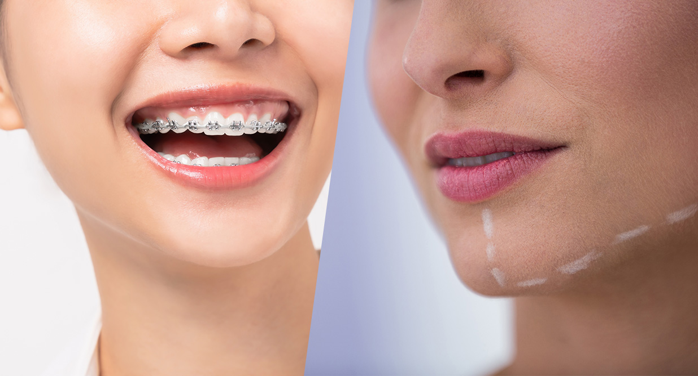
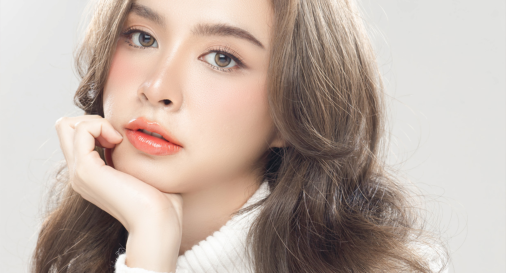
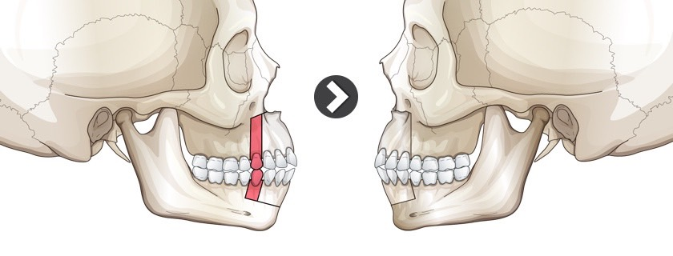
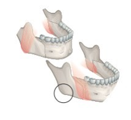
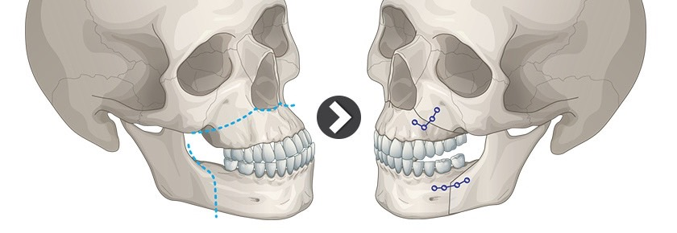
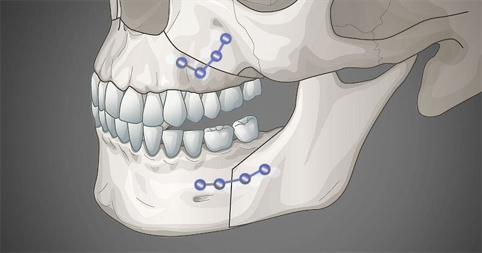
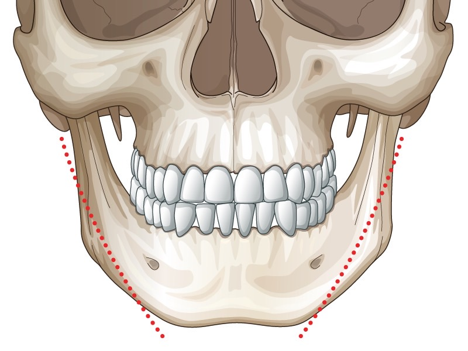

การผ่าตัดขากรรไกร (Double Jaw Surgery) คือการผ่าตัดขยับปรับตำแหน่งแนวขากรรไกรที่ผิดปกติ ให้อยู่ในตำแหน่งที่เหมาะสมและรับกับใบหน้าอย่างพอดี โดยปกติผู้ที่สามารถรับการศัลยกรรมประเภทนี้ต้องเป็นคนที่ต้องการแก้ไขปัญหาปากยื่นหรือปากอูมจนเกินไป หรือปัญหาปากปิดไม่สนิท หน้ายาวหรือสั้นเกิน โดยมักทำและจัดฟันเพื่อให้ใบหน้าออกมาดูดี สมส่วนมากขึ้น
การผ่าตัดขากรรไกรที่เกาหลีเป็นการผ่าตัดที่แตกต่างจากการผ่าตัดกรามแบบทั่วไป แน่นอนว่าผลลัพธ์คือการแก้ปัญหาเรื่องโครงหน้า แต่ขากรรไกรมันเกี่ยวข้องกับเรื่องปัญหากระดูก และการทำฟันด้วยเพราะขากรรไกรเป็นส่วนรองของกระดูกฟันนั่นเอง ทั้งนี้หมายความว่าเมื่อมีการผ่าตัดขากรรไกรแล้ว สิ่งที่ต้องทำควบคู่กับคือการจัดฟันเพื่อนทำให้หน้าสมส่วนมากขึ้น
การผ่าตัดขากรรไกรเป็นศัลยกรรมประเภทที่ไม่ได้เหมาะกับทุกคน เพราะเป็นการศัลยกรรมที่ไม่ใช่เน้นเสริมความงามแต่เป็นการแก้ไขปัญหาเพื่อใช้ชีวิตประจำวัน โดยผู้ที่เหมาะสมสำหรับการศัลยกรรมประเภทนี้มีดังนี้
ทั้งนี้การผ่าตัดขากรรไกรเป็นการผ่าตัดที่มากกว่าแค่เรื่องของการปรับโครงหน้าต้องใช้ความละเอียดมากกว่า ดังนั้นศัลยแพทย์จะต้องประเมินว่าสามารถแก้ไขแบบใดได้บ้าง โดยบางเคสอาจต้องมีการจัดฟันหลังการผ่าตัดหรืออาจไม่จำเป็น แล้วแต่กรณี
QUESTION : ระยะเวลาพักฟื้นหลังจากผ่าตัดขากรรไกร นานแค่ไหน ?
ANSWER : อย่างที่ได้ทราบกันว่าการผ่าตัดขากรรไกรเป็นการรักษาปัญหาโครงหน้าไม่สมมาตรและแก้ไขปัญหาการใช้ชีวิตลำบาก ต้องมีการคำนึงถึงตำแหน่งของกระดูก การสบฟัน ระยะเวลาจึงนานกว่าศัลยกรรมทั่วไป ปกติทางโรงพยาบาลจะให้เวลาอยู่เกาหลี 3 สัปดาห์ถึง 1 เดือน เพราะยังต้องมีการนัดเช็คอาการบวมช้ำและเลือดคลั่งด้วย
QUESTION : เวเฟอร์ คืออะไร ?
ANSWER :เวเฟอร์ คืออุปกรณ์ที่ใช้หลังการผ่าตัด ใช้สำหรับประคองขากรรไกรให้เข้าที่ โดยอุปกรณ์นี้ต้องมีการนักพิมพ์ฟันไว้ 7 วันก่อนผ่าตัดและต้องทำควบคู่กับทันตแพทย์ โดยมีระยะเวลาที่ต้องใส่อยู่ประมาณ 1-2 เดือน
QUESTION : ผลข้างเคียงการผ่าตัดขากรรไกร มีอะไรบ้าง ?
ANSWER :เนื่องจากการผ่าตัดขากรรไกรเกี่ยวข้องกับการใช้ปาก ดังนั้นผลข้างเคียงที่ตามมาอาจทำให้การใช้ชีวิตลำบาก เช่น อาการปวดบวมบริเวณใบหน้า อาการชาบริเวณริมฝีปาก คาง หรือลิ้น การติดเชื้อ ปัญหาการสบฟัน ปัญหาการเคี้ยวอาหาร และปัญหาการสื่อสารที่ยากขึ้น (ในขณะพักฟื้น)
การผ่าตัดขากรรไกรต้องใช้ความรู้ ประสบการณ์และคำแนะนำจากแพทย์ผู้เชี่ยวชาญผู้เรียนเฉพาะทางด้านนี้มาโดยตรง การเลือกศัลยแพทย์จึงมีความสำคัญอย่างมากและต้องเป็นหมอเฉพาะทางขากรรไกรเท่านั้น รวมไปถึงการเลือกโรงพยาบาลที่ปลอดภัยและเชื่อถือได้เช่นกัน และเราเข้าใจว่ามันไม่ใช่เรื่องง่าย ดังนั้น Grandnewlife ในฐานะเอเจนซี่พาไปศัลยกรรมเกาหลีจึงได้คัดเลือกโรงพยาบาลและแพทย์ที่เชี่ยวชาญที่สุด ประสบการณ์แน่นที่สุด เพื่อแก้ไขปัญหาเกี่ยวกับขากรรไกรได้อย่างเต็มประสิทธิภาพ
    Reference : https://th.idhospital.com/facial-contouring/square-jaw-surgery/